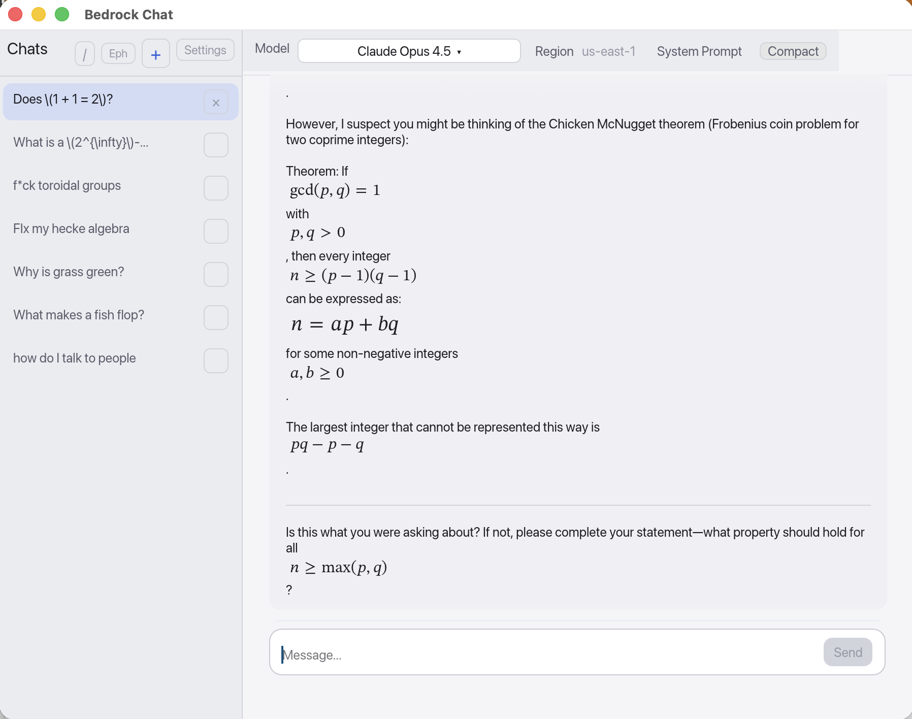

Bedrock Chat
Native macOS client for AWS Bedrock

Alpha. Early software — expect bugs. Not audited.

Features
64+ Models
Claude, Llama, DeepSeek, Mistral, Qwen, Nova from 16 providers
Streaming
Real-time token streaming with usage display
Markdown
Rich text, syntax highlighting, and tables
LaTeX Math
Inline $...$ and display $$...$$ rendering via ReX
Search
Full-text search with Cmd+K
System Prompts
Custom prompts per conversation
Ephemeral Mode
Chat without saving to disk
Compaction
Summarize history to save tokens
Smart Scroll
Read while streaming uninterrupted
Shortcuts
| Key | Action |
|---|---|
| Enter | Send message |
| Shift + Enter | New line |
| Cmd + K | Search chats |
| Esc | Close modal |
| Esc Esc | Interrupt generation |
Build
cargo run --release
Requires Rust 1.75+ and macOS